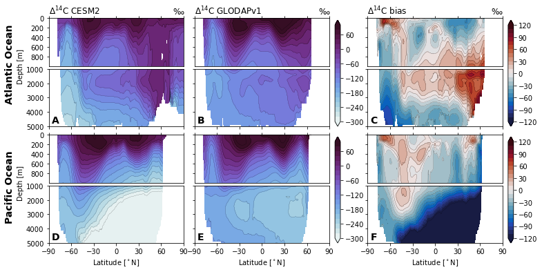
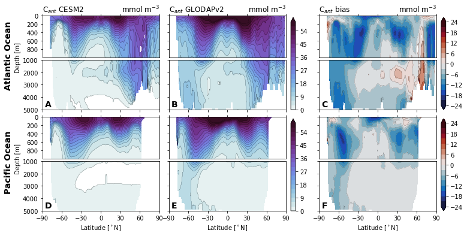
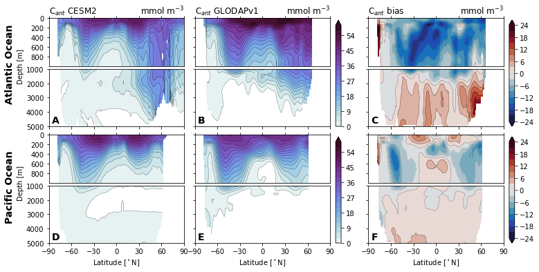
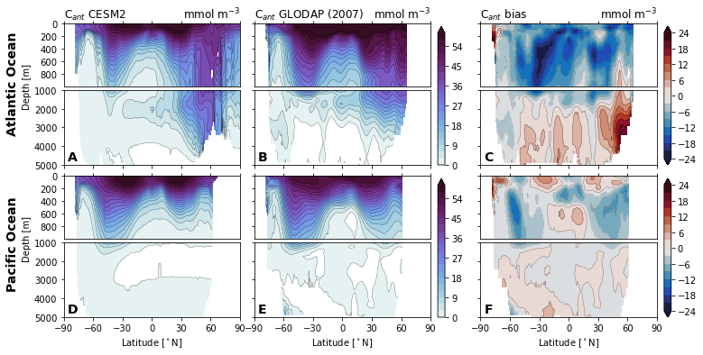
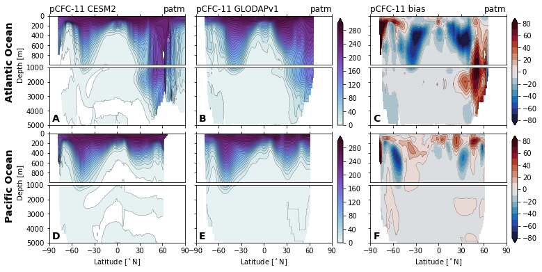
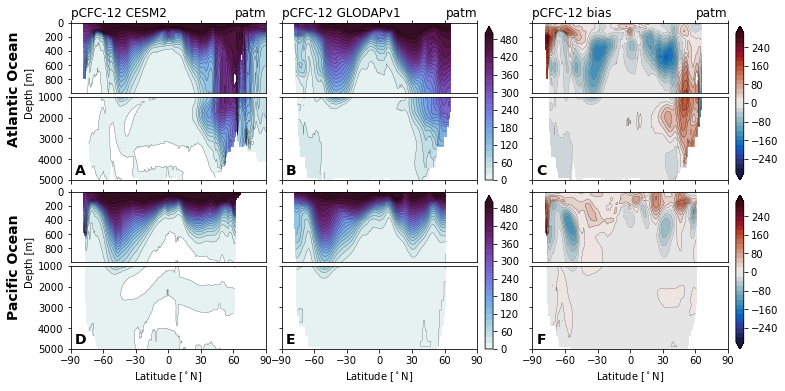

Ventilation tracers: CFCs, 14C, Cant¶
%load_ext autoreload
%autoreload 2
import os
import numpy as np
import pandas as pd
import xarray as xr
import matplotlib.pyplot as plt
import matplotlib.gridspec as gridspec
import matplotlib.colors as colors
import cmocean
import xpersist as xp
cache_dir = '/glade/p/cgd/oce/projects/cesm2-marbl/xpersist_cache/3d_fields'
if (os.path.isdir(cache_dir)):
xp.settings['cache_dir'] = cache_dir
os.makedirs(cache_dir, exist_ok=True)
import pop_tools
import climo_utils as cu
import utils
import glodap
%matplotlib inline
xr.set_options(arithmetic_join='exact');
Set region mask for zonal means¶
mask3d = utils.get_pop_region_mask_za(mask_type='3D')
basins = mask3d.region.rename({'region': 'basins'})
mask2d = utils.get_pop_region_mask_za(mask_type='2D')
mask2d.plot()
<matplotlib.collections.QuadMesh at 0x2b0772e460d0>
Load zonal means of GLODAP observations¶
µmolkg_to_mmolm3 = 1026. * 1e-3 # µmol/kg --> mmol/m^3
µmolkg_to_mmolm3
1.026
fields_from = {
'GLODAPv1': ['pCFC11', 'pCFC12', 'Del14C', 'Cant_v1'],
'GLODAPv2.2016b_MappedClimatologies': ['Cant', 'ALK'],
'GLODAPv1+Gruber2019': ['Cant_v1pGruber2019'],
}
ds_list = []
for product_name, fields_list in fields_from.items():
ds = glodap.open_glodap_pop_grid(product_name)[fields_list]
ds_list_i = []
for v in fields_list:
ds_list_i.append(
utils.zonal_mean_via_fortran(
ds, var=v,
grid='POP_gx1v7',
region_mask=mask2d,
replace_kmt=True,
)
)
ds_list.append(xr.merge(ds_list_i))
ds_za = xr.merge(ds_list)
with xr.set_options(keep_attrs=True):
for v in ['Cant', 'Cant_v1', 'ALK']:
if v in ds_za:
ds_za[v] = ds_za[v] * µmolkg_to_mmolm3
ds_za[v].attrs['units'] = 'mmol m$^{-3}$'
ds_za = ds_za.rename({k: f'{k}_obs' for k in ds_za.data_vars})
ds_za['basins'] = basins
ds_za
exists: /glade/work/mgrover/adhoc-regridding/POP_gx1v7.nc
exists: /glade/work/mgrover/adhoc-regridding/latlon_glodapv1.nc
source grid dims: (180, 360)
destination grid dims: (384, 320)
za ran successfully, writing netcdf output
za ran successfully, writing netcdf output
za ran successfully, writing netcdf output
za ran successfully, writing netcdf output
exists: /glade/work/mgrover/adhoc-regridding/POP_gx1v7.nc
exists: /glade/work/mgrover/adhoc-regridding/latlon_glodapv2.nc
source grid dims: (180, 360)
destination grid dims: (384, 320)
za ran successfully, writing netcdf output
za ran successfully, writing netcdf output
exists: /glade/work/mgrover/adhoc-regridding/POP_gx1v7.nc
exists: /glade/work/mgrover/adhoc-regridding/latlon_glodapv1.nc
source grid dims: (180, 360)
destination grid dims: (384, 320)
za ran successfully, writing netcdf output
<xarray.Dataset>
Dimensions: (basins: 4, lat_t: 394, lat_t_edges: 395, z_t: 60)
Coordinates:
* basins (basins) <U14 'Global' ... 'Indian Ocean'
* lat_t (lat_t) float32 -79.22 -78.69 -78.15 ... 89.37 89.9
* lat_t_edges (lat_t_edges) float32 -79.49 -78.95 ... 89.64 90.0
* z_t (z_t) float64 500.0 1.5e+03 ... 5.125e+05 5.375e+05
Data variables:
pCFC11_obs (basins, z_t, lat_t) float64 nan nan ... nan nan
pCFC12_obs (basins, z_t, lat_t) float64 nan nan ... nan nan
Del14C_obs (basins, z_t, lat_t) float64 nan nan ... nan nan
Cant_v1_obs (basins, z_t, lat_t) float64 nan nan ... nan nan
Cant_obs (basins, z_t, lat_t) float64 nan nan ... nan nan
ALK_obs (basins, z_t, lat_t) float64 nan nan ... nan nan
Cant_v1pGruber2019_obs (basins, z_t, lat_t) float64 nan nan ... nan nanxarray.Dataset
- basins: 4
- lat_t: 394
- lat_t_edges: 395
- z_t: 60
- basins(basins)<U14'Global' ... 'Indian Ocean'
array(['Global', 'Atlantic Ocean', 'Pacific Ocean', 'Indian Ocean'], dtype='<U14') - lat_t(lat_t)float32-79.22 -78.69 -78.15 ... 89.37 89.9
- long_name :
- Latitude Cell Centers
- units :
- degrees_north
- edges :
- lat_t_edges
array([-79.22052 , -78.68631 , -78.15209 , ..., 88.836334, 89.370575, 89.904816], dtype=float32) - lat_t_edges(lat_t_edges)float32-79.49 -78.95 -78.42 ... 89.64 90.0
array([-79.48714 , -78.952896, -78.418655, ..., 89.103455, 89.637695, 90. ], dtype=float32) - z_t(z_t)float64500.0 1.5e+03 ... 5.375e+05
- units :
- cm
- long_name :
- depth from surface to midpoint of layer
- positive :
- down
array([5.000000e+02, 1.500000e+03, 2.500000e+03, 3.500000e+03, 4.500000e+03, 5.500000e+03, 6.500000e+03, 7.500000e+03, 8.500000e+03, 9.500000e+03, 1.050000e+04, 1.150000e+04, 1.250000e+04, 1.350000e+04, 1.450000e+04, 1.550000e+04, 1.650984e+04, 1.754790e+04, 1.862913e+04, 1.976603e+04, 2.097114e+04, 2.225783e+04, 2.364088e+04, 2.513702e+04, 2.676542e+04, 2.854837e+04, 3.051192e+04, 3.268680e+04, 3.510935e+04, 3.782276e+04, 4.087847e+04, 4.433777e+04, 4.827367e+04, 5.277280e+04, 5.793729e+04, 6.388626e+04, 7.075633e+04, 7.870025e+04, 8.788252e+04, 9.847059e+04, 1.106204e+05, 1.244567e+05, 1.400497e+05, 1.573946e+05, 1.764003e+05, 1.968944e+05, 2.186457e+05, 2.413972e+05, 2.649001e+05, 2.889385e+05, 3.133405e+05, 3.379794e+05, 3.627670e+05, 3.876452e+05, 4.125768e+05, 4.375393e+05, 4.625190e+05, 4.875083e+05, 5.125028e+05, 5.375000e+05])
- pCFC11_obs(basins, z_t, lat_t)float64...
- long_name :
- pCFC-11
- units :
- patm
array([[[nan, nan, ..., nan, nan], [nan, nan, ..., nan, nan], ..., [nan, nan, ..., nan, nan], [nan, nan, ..., nan, nan]], [[nan, nan, ..., nan, nan], [nan, nan, ..., nan, nan], ..., [nan, nan, ..., nan, nan], [nan, nan, ..., nan, nan]], [[nan, nan, ..., nan, nan], [nan, nan, ..., nan, nan], ..., [nan, nan, ..., nan, nan], [nan, nan, ..., nan, nan]], [[nan, nan, ..., nan, nan], [nan, nan, ..., nan, nan], ..., [nan, nan, ..., nan, nan], [nan, nan, ..., nan, nan]]]) - pCFC12_obs(basins, z_t, lat_t)float64...
- long_name :
- pCFC-12
- units :
- patm
array([[[nan, nan, ..., nan, nan], [nan, nan, ..., nan, nan], ..., [nan, nan, ..., nan, nan], [nan, nan, ..., nan, nan]], [[nan, nan, ..., nan, nan], [nan, nan, ..., nan, nan], ..., [nan, nan, ..., nan, nan], [nan, nan, ..., nan, nan]], [[nan, nan, ..., nan, nan], [nan, nan, ..., nan, nan], ..., [nan, nan, ..., nan, nan], [nan, nan, ..., nan, nan]], [[nan, nan, ..., nan, nan], [nan, nan, ..., nan, nan], ..., [nan, nan, ..., nan, nan], [nan, nan, ..., nan, nan]]]) - Del14C_obs(basins, z_t, lat_t)float64...
- long_name :
- $^{14}$C
- units :
- permille
array([[[nan, nan, ..., nan, nan], [nan, nan, ..., nan, nan], ..., [nan, nan, ..., nan, nan], [nan, nan, ..., nan, nan]], [[nan, nan, ..., nan, nan], [nan, nan, ..., nan, nan], ..., [nan, nan, ..., nan, nan], [nan, nan, ..., nan, nan]], [[nan, nan, ..., nan, nan], [nan, nan, ..., nan, nan], ..., [nan, nan, ..., nan, nan], [nan, nan, ..., nan, nan]], [[nan, nan, ..., nan, nan], [nan, nan, ..., nan, nan], ..., [nan, nan, ..., nan, nan], [nan, nan, ..., nan, nan]]]) - Cant_v1_obs(basins, z_t, lat_t)float64nan nan 26.13 26.78 ... nan nan nan
- units :
- mmol m$^{-3}$
array([[[ nan, nan, 26.12513246, ..., nan, nan, nan], [ nan, nan, 25.70800719, ..., nan, nan, nan], [ nan, nan, 24.34805168, ..., nan, nan, nan], ..., [ nan, nan, nan, ..., nan, nan, nan], [ nan, nan, nan, ..., nan, nan, nan], [ nan, nan, nan, ..., nan, nan, nan]], [[ nan, nan, 21.60995085, ..., nan, nan, nan], [ nan, nan, 21.07229263, ..., nan, nan, nan], [ nan, nan, 20.36618903, ..., nan, nan, nan], ... [ nan, nan, nan, ..., nan, nan, nan], [ nan, nan, nan, ..., nan, nan, nan], [ nan, nan, nan, ..., nan, nan, nan]], [[ nan, nan, nan, ..., nan, nan, nan], [ nan, nan, nan, ..., nan, nan, nan], [ nan, nan, nan, ..., nan, nan, nan], ..., [ nan, nan, nan, ..., nan, nan, nan], [ nan, nan, nan, ..., nan, nan, nan], [ nan, nan, nan, ..., nan, nan, nan]]]) - Cant_obs(basins, z_t, lat_t)float64nan nan 34.09 35.43 ... nan nan nan
- long_name :
- moles of anthropogenic carbon content per unit mass in seawater
- units :
- mmol m$^{-3}$
- Description :
- The GLODAPv2.2016b input data were normalized to the year 2002 using anthropogenic carbon calculated with the TTD method prior to mapping.
- time_period :
- For all surfaces (1-33) data from the years 1972-2013 inclusive have been used for mapping
array([[[ nan, nan, 34.0910502 , ..., 34.48518809, 34.91430343, 34.78505587], [ nan, nan, 34.57719095, ..., 34.14557923, 34.54970547, 34.6049128 ], [ nan, nan, 34.764624 , ..., nan, nan, nan], ..., [ nan, nan, nan, ..., nan, nan, nan], [ nan, nan, nan, ..., nan, nan, nan], [ nan, nan, nan, ..., nan, nan, nan]], [[ nan, nan, 34.1793056 , ..., 34.48518809, 34.91430343, 34.78505587], [ nan, nan, 35.26896139, ..., 34.14557923, 34.54970547, 34.6049128 ], [ nan, nan, 36.17607756, ..., nan, nan, nan], ... [ nan, nan, nan, ..., nan, nan, nan], [ nan, nan, nan, ..., nan, nan, nan], [ nan, nan, nan, ..., nan, nan, nan]], [[ nan, nan, nan, ..., nan, nan, nan], [ nan, nan, nan, ..., nan, nan, nan], [ nan, nan, nan, ..., nan, nan, nan], ..., [ nan, nan, nan, ..., nan, nan, nan], [ nan, nan, nan, ..., nan, nan, nan], [ nan, nan, nan, ..., nan, nan, nan]]]) - ALK_obs(basins, z_t, lat_t)float64nan nan 2.382e+03 ... nan nan nan
- long_name :
- seawater alkalinity expressed as mole equivalent per unit mass
- units :
- mmol m$^{-3}$
- time_period :
- For all surfaces (1-33) data from the years 1972-2013 inclusive have been used for mapping
array([[[ nan, nan, 2381.6453554 , ..., 2269.73092531, 2263.24456873, 2254.22085007], [ nan, nan, 2380.61858496, ..., 2265.18994051, 2258.4005919 , 2240.64319504], [ nan, nan, 2377.26557354, ..., 2278.74346011, 2272.55519948, 2289.42073359], ..., [ nan, nan, nan, ..., nan, nan, nan], [ nan, nan, nan, ..., nan, nan, nan], [ nan, nan, nan, ..., nan, nan, nan]], [[ nan, nan, 2397.06338312, ..., 2269.73092531, 2263.24456873, 2254.22085007], [ nan, nan, 2396.89977785, ..., 2265.18994051, 2258.4005919 , 2240.64319504], [ nan, nan, 2392.69994515, ..., 2278.74346011, 2272.55519948, 2289.42073359], ... [ nan, nan, nan, ..., nan, nan, nan], [ nan, nan, nan, ..., nan, nan, nan], [ nan, nan, nan, ..., nan, nan, nan]], [[ nan, nan, nan, ..., nan, nan, nan], [ nan, nan, nan, ..., nan, nan, nan], [ nan, nan, nan, ..., nan, nan, nan], ..., [ nan, nan, nan, ..., nan, nan, nan], [ nan, nan, nan, ..., nan, nan, nan], [ nan, nan, nan, ..., nan, nan, nan]]]) - Cant_v1pGruber2019_obs(basins, z_t, lat_t)float64...
array([[[nan, nan, ..., nan, nan], [nan, nan, ..., nan, nan], ..., [nan, nan, ..., nan, nan], [nan, nan, ..., nan, nan]], [[nan, nan, ..., nan, nan], [nan, nan, ..., nan, nan], ..., [nan, nan, ..., nan, nan], [nan, nan, ..., nan, nan]], [[nan, nan, ..., nan, nan], [nan, nan, ..., nan, nan], ..., [nan, nan, ..., nan, nan], [nan, nan, ..., nan, nan]], [[nan, nan, ..., nan, nan], [nan, nan, ..., nan, nan], ..., [nan, nan, ..., nan, nan], [nan, nan, ..., nan, nan]]])
ds_za.pCFC11_obs.isel(basins=1).plot()
<matplotlib.collections.QuadMesh at 0x2b065c3d27d0>
ds_za.Cant_obs.isel(basins=0).plot()
<matplotlib.collections.QuadMesh at 0x2b065c72f350>
(ds_za.Cant_v1_obs - ds_za.Cant_obs).isel(basins=0).plot()
<matplotlib.collections.QuadMesh at 0x2b065cabd050>
ds_za.Del14C_obs.isel(basins=0).plot()
<matplotlib.collections.QuadMesh at 0x2b065d3f4910>
Load data from CESM integrations¶
cluster, client = utils.get_ClusterClient()
cluster.scale(12) #adapt(minimum_jobs=0, maximum_jobs=24)
client
Client
|
Cluster
|
time_slice_glodapv2 = slice('2002-01-15', '2003-01-15')
time_slice_glodapv1 = slice('1990-01-15', '2001-01-15')
time_slice_Cant_v1pGruber2019 = slice('2007-01-15', '2008-01-15')
cesm_fields = dict(
Cant=time_slice_glodapv2,
Cant_v1=time_slice_glodapv1,
Cant_v1pGruber2019=time_slice_Cant_v1pGruber2019,
ALK=time_slice_glodapv2,
pCFC11=time_slice_glodapv1,
pCFC12=time_slice_glodapv1,
Del14C=time_slice_glodapv1,
)
ds_cesm = {}
for variable, time_slice in cesm_fields.items():
xp_func = xp.persist_ds(cu.read_CESM_var, name=f'{variable}', trust_cache=True)
ds_cesm[variable] = xp_func(
time_slice,
variable,
mean_dims=['member_id', 'time'],
)
assuming cache is correct
reading cached file: /glade/p/cgd/oce/projects/cesm2-marbl/xpersist_cache/3d_fields/Cant.nc
assuming cache is correct
reading cached file: /glade/p/cgd/oce/projects/cesm2-marbl/xpersist_cache/3d_fields/Cant_v1.nc
assuming cache is correct
reading cached file: /glade/p/cgd/oce/projects/cesm2-marbl/xpersist_cache/3d_fields/Cant_v1pGruber2019.nc
assuming cache is correct
reading cached file: /glade/p/cgd/oce/projects/cesm2-marbl/xpersist_cache/3d_fields/ALK.nc
assuming cache is correct
reading cached file: /glade/p/cgd/oce/projects/cesm2-marbl/xpersist_cache/3d_fields/pCFC11.nc
assuming cache is correct
reading cached file: /glade/p/cgd/oce/projects/cesm2-marbl/xpersist_cache/3d_fields/pCFC12.nc
assuming cache is correct
reading cached file: /glade/p/cgd/oce/projects/cesm2-marbl/xpersist_cache/3d_fields/Del14C.nc
After Compute, Spin Down Cluster¶
client.close()
cluster.close()
del client
del cluster
ds_cesm.keys()
dict_keys(['Cant', 'Cant_v1', 'Cant_v1pGruber2019', 'ALK', 'pCFC11', 'pCFC12', 'Del14C'])
grid = pop_tools.get_grid('POP_gx1v7')
vol = grid.dz * grid.TAREA * 1e-6
vol = vol.where(mask2d > 0).fillna(0.)
vol = vol.drop(['z_t'])
Compute global inventories of Cant¶
ds = glodap.open_glodap('GLODAPv2.2016b_MappedClimatologies')
ds.Cant.isel(depth=0).plot()
<matplotlib.collections.QuadMesh at 0x2b065cb6d490>
mmol_to_PgC = 12. * 1e-3 * 1e-15
products = ['GLODAPv2.2016b_MappedClimatologies', 'GLODAPv1', 'GLODAPv1+Gruber2019']
product_short_names = {
'GLODAPv2.2016b_MappedClimatologies': 'GLODAPv2',
'GLODAPv1': 'GLODAPv1',
'GLODAPv1+Gruber2019': 'Gruber et al. (2019)',
}
µmolkg_to_mmolm3 = 1026. * 1e-3
lines = []
for product in products:
if product == 'GLODAPv1':
v = 'Cant_v1'
elif product == 'GLODAPv1+Gruber2019':
v = 'Cant_v1pGruber2019'
else:
v = 'Cant'
entry = dict(product=product_short_names[product])
# compute on native grid
ds = glodap.open_glodap(product)
masked_vol = ds.dz.drop('depth') * ds.area * ds[v].notnull().drop('depth')
var = ds[v].where(ds[v] > 0.).fillna(0.).drop('depth')
inv = (var * µmolkg_to_mmolm3 * masked_vol).sum().values * mmol_to_PgC
entry['Obs (native)'] = inv
# compute on POP grid
ds = glodap.open_glodap_pop_grid(product)
masked_vol = vol * ds[v].notnull().drop(['z_t'])
pop_mask = masked_vol
var = ds[v].where(ds[v] > 0.).fillna(0.).drop(['z_t'])
inv = (var * µmolkg_to_mmolm3 * masked_vol).sum().values * mmol_to_PgC
entry['Obs (POP)'] = inv
# compute model inventories
var = ds_cesm[v][v].where(ds_cesm[v][v] > 0.).fillna(0.).drop(['z_t'])
inv = (var * pop_mask).sum().values * mmol_to_PgC
entry['CESM (obs-mask)'] = inv
inv = (var * vol).sum().values * mmol_to_PgC
entry['CESM'] = inv
lines.append(entry)
df = pd.DataFrame(lines).set_index('product')
df
exists: /glade/work/mgrover/adhoc-regridding/POP_gx1v7.nc
exists: /glade/work/mgrover/adhoc-regridding/latlon_glodapv2.nc
source grid dims: (180, 360)
destination grid dims: (384, 320)
exists: /glade/work/mgrover/adhoc-regridding/POP_gx1v7.nc
exists: /glade/work/mgrover/adhoc-regridding/latlon_glodapv1.nc
source grid dims: (180, 360)
destination grid dims: (384, 320)
exists: /glade/work/mgrover/adhoc-regridding/POP_gx1v7.nc
exists: /glade/work/mgrover/adhoc-regridding/latlon_glodapv1.nc
source grid dims: (180, 360)
destination grid dims: (384, 320)
| Obs (native) | Obs (POP) | CESM (obs-mask) | CESM | |
|---|---|---|---|---|
| product | ||||
| GLODAPv2 | 166.290771 | 166.756835 | 101.532239 | 103.764172 |
| GLODAPv1 | 107.141279 | 107.787029 | 84.708898 | 90.440270 |
| Gruber et al. (2019) | 135.269590 | 137.383126 | 106.488575 | 114.485979 |
[v for v in ds_za.data_vars if 'Gruber' in v]
ds_tmp = xr.merge([ds for ds in ds_cesm.values()])
ds_tmp = utils.zonal_mean_via_fortran(ds_tmp,
','.join(ds_cesm.keys()), grid='POP_gx1v7',
region_mask=mask2d)
ds_tmp['z_t'] = ds_za.z_t
ds_za = xr.merge((ds_tmp, ds_za))
for v in ['pCFC11', 'pCFC12', 'Cant', 'Cant_v1', 'Cant_v1pGruber2019', 'Del14C']:
ds_za[f'{v}_bias'] = ds_za[v] - ds_za[f'{v}_obs']
ds_za
za ran successfully, writing netcdf output
<xarray.Dataset>
Dimensions: (basins: 4, lat_t: 394, lat_t_edges: 395, z_t: 60)
Coordinates:
* basins (basins) object 'Global' ... 'Indian Ocean'
* lat_t (lat_t) float32 -79.22 -78.69 -78.15 ... 89.37 89.9
* lat_t_edges (lat_t_edges) float32 -79.49 -78.95 ... 89.64 90.0
* z_t (z_t) float64 500.0 1.5e+03 ... 5.125e+05 5.375e+05
Data variables: (12/20)
Cant (basins, z_t, lat_t) float32 nan nan ... nan nan
Cant_v1 (basins, z_t, lat_t) float32 nan nan ... nan nan
Cant_v1pGruber2019 (basins, z_t, lat_t) float32 nan nan ... nan nan
ALK (basins, z_t, lat_t) float32 nan nan ... nan nan
pCFC11 (basins, z_t, lat_t) float32 nan nan ... nan nan
pCFC12 (basins, z_t, lat_t) float32 nan nan ... nan nan
... ...
pCFC11_bias (basins, z_t, lat_t) float64 nan nan ... nan nan
pCFC12_bias (basins, z_t, lat_t) float64 nan nan ... nan nan
Cant_bias (basins, z_t, lat_t) float64 nan nan ... nan nan
Cant_v1_bias (basins, z_t, lat_t) float64 nan nan ... nan nan
Cant_v1pGruber2019_bias (basins, z_t, lat_t) float64 nan nan ... nan nan
Del14C_bias (basins, z_t, lat_t) float64 nan nan ... nan nanxarray.Dataset
- basins: 4
- lat_t: 394
- lat_t_edges: 395
- z_t: 60
- basins(basins)object'Global' ... 'Indian Ocean'
array(['Global', 'Atlantic Ocean', 'Pacific Ocean', 'Indian Ocean'], dtype=object) - lat_t(lat_t)float32-79.22 -78.69 -78.15 ... 89.37 89.9
- long_name :
- Latitude Cell Centers
- units :
- degrees_north
- edges :
- lat_t_edges
array([-79.22052 , -78.68631 , -78.15209 , ..., 88.836334, 89.370575, 89.904816], dtype=float32) - lat_t_edges(lat_t_edges)float32-79.49 -78.95 -78.42 ... 89.64 90.0
array([-79.48714 , -78.952896, -78.418655, ..., 89.103455, 89.637695, 90. ], dtype=float32) - z_t(z_t)float64500.0 1.5e+03 ... 5.375e+05
- units :
- cm
- long_name :
- depth from surface to midpoint of layer
- positive :
- down
array([5.000000e+02, 1.500000e+03, 2.500000e+03, 3.500000e+03, 4.500000e+03, 5.500000e+03, 6.500000e+03, 7.500000e+03, 8.500000e+03, 9.500000e+03, 1.050000e+04, 1.150000e+04, 1.250000e+04, 1.350000e+04, 1.450000e+04, 1.550000e+04, 1.650984e+04, 1.754790e+04, 1.862913e+04, 1.976603e+04, 2.097114e+04, 2.225783e+04, 2.364088e+04, 2.513702e+04, 2.676542e+04, 2.854837e+04, 3.051192e+04, 3.268680e+04, 3.510935e+04, 3.782276e+04, 4.087847e+04, 4.433777e+04, 4.827367e+04, 5.277280e+04, 5.793729e+04, 6.388626e+04, 7.075633e+04, 7.870025e+04, 8.788252e+04, 9.847059e+04, 1.106204e+05, 1.244567e+05, 1.400497e+05, 1.573946e+05, 1.764003e+05, 1.968944e+05, 2.186457e+05, 2.413972e+05, 2.649001e+05, 2.889385e+05, 3.133405e+05, 3.379794e+05, 3.627670e+05, 3.876452e+05, 4.125768e+05, 4.375393e+05, 4.625190e+05, 4.875083e+05, 5.125028e+05, 5.375000e+05])
- Cant(basins, z_t, lat_t)float32...
- long_name :
- Anthropogenic CO$_2$
- units :
- mmol/m^3
- grid_loc :
- 3111
- cell_methods :
- time: mean
array([[[ nan, nan, ..., 35.54513 , 35.566673], [ nan, nan, ..., 35.521404, 35.54196 ], ..., [ nan, nan, ..., nan, nan], [ nan, nan, ..., nan, nan]], [[ nan, nan, ..., 35.54513 , 35.566673], [ nan, nan, ..., 35.521404, 35.54196 ], ..., [ nan, nan, ..., nan, nan], [ nan, nan, ..., nan, nan]], [[ nan, nan, ..., nan, nan], [ nan, nan, ..., nan, nan], ..., [ nan, nan, ..., nan, nan], [ nan, nan, ..., nan, nan]], [[ nan, nan, ..., nan, nan], [ nan, nan, ..., nan, nan], ..., [ nan, nan, ..., nan, nan], [ nan, nan, ..., nan, nan]]], dtype=float32) - Cant_v1(basins, z_t, lat_t)float32...
- long_name :
- Anthropogenic CO$_2$
- units :
- mmol/m^3
- grid_loc :
- 3111
- cell_methods :
- time: mean
array([[[ nan, nan, ..., 30.320127, 30.347637], [ nan, nan, ..., 30.308672, 30.335844], ..., [ nan, nan, ..., nan, nan], [ nan, nan, ..., nan, nan]], [[ nan, nan, ..., 30.320127, 30.347637], [ nan, nan, ..., 30.308672, 30.335844], ..., [ nan, nan, ..., nan, nan], [ nan, nan, ..., nan, nan]], [[ nan, nan, ..., nan, nan], [ nan, nan, ..., nan, nan], ..., [ nan, nan, ..., nan, nan], [ nan, nan, ..., nan, nan]], [[ nan, nan, ..., nan, nan], [ nan, nan, ..., nan, nan], ..., [ nan, nan, ..., nan, nan], [ nan, nan, ..., nan, nan]]], dtype=float32) - Cant_v1pGruber2019(basins, z_t, lat_t)float32...
- long_name :
- Anthropogenic CO$_2$
- units :
- mmol/m^3
- grid_loc :
- 3111
- cell_methods :
- time: mean
array([[[ nan, nan, ..., 39.53727, 39.56421], [ nan, nan, ..., 39.51763, 39.54364], ..., [ nan, nan, ..., nan, nan], [ nan, nan, ..., nan, nan]], [[ nan, nan, ..., 39.53727, 39.56421], [ nan, nan, ..., 39.51763, 39.54364], ..., [ nan, nan, ..., nan, nan], [ nan, nan, ..., nan, nan]], [[ nan, nan, ..., nan, nan], [ nan, nan, ..., nan, nan], ..., [ nan, nan, ..., nan, nan], [ nan, nan, ..., nan, nan]], [[ nan, nan, ..., nan, nan], [ nan, nan, ..., nan, nan], ..., [ nan, nan, ..., nan, nan], [ nan, nan, ..., nan, nan]]], dtype=float32) - ALK(basins, z_t, lat_t)float32...
- long_name :
- Alkalinity
- units :
- meq/m^3
- grid_loc :
- 3111
- cell_methods :
- time: mean
array([[[ nan, nan, ..., 2183.586 , 2182.9753], [ nan, nan, ..., 2186.9585, 2186.4329], ..., [ nan, nan, ..., nan, nan], [ nan, nan, ..., nan, nan]], [[ nan, nan, ..., 2183.586 , 2182.9753], [ nan, nan, ..., 2186.9585, 2186.4329], ..., [ nan, nan, ..., nan, nan], [ nan, nan, ..., nan, nan]], [[ nan, nan, ..., nan, nan], [ nan, nan, ..., nan, nan], ..., [ nan, nan, ..., nan, nan], [ nan, nan, ..., nan, nan]], [[ nan, nan, ..., nan, nan], [ nan, nan, ..., nan, nan], ..., [ nan, nan, ..., nan, nan], [ nan, nan, ..., nan, nan]]], dtype=float32) - pCFC11(basins, z_t, lat_t)float32...
- long_name :
- pCFC-11
- units :
- patm
array([[[ nan, nan, ..., 220.70512, 220.97702], [ nan, nan, ..., 220.58131, 220.84933], ..., [ nan, nan, ..., nan, nan], [ nan, nan, ..., nan, nan]], [[ nan, nan, ..., 220.70512, 220.97702], [ nan, nan, ..., 220.58131, 220.84933], ..., [ nan, nan, ..., nan, nan], [ nan, nan, ..., nan, nan]], [[ nan, nan, ..., nan, nan], [ nan, nan, ..., nan, nan], ..., [ nan, nan, ..., nan, nan], [ nan, nan, ..., nan, nan]], [[ nan, nan, ..., nan, nan], [ nan, nan, ..., nan, nan], ..., [ nan, nan, ..., nan, nan], [ nan, nan, ..., nan, nan]]], dtype=float32) - pCFC12(basins, z_t, lat_t)float32...
- long_name :
- pCFC-12
- units :
- patm
array([[[ nan, nan, ..., 427.85675, 428.42303], [ nan, nan, ..., 427.57755, 428.1357 ], ..., [ nan, nan, ..., nan, nan], [ nan, nan, ..., nan, nan]], [[ nan, nan, ..., 427.85675, 428.42303], [ nan, nan, ..., 427.57755, 428.1357 ], ..., [ nan, nan, ..., nan, nan], [ nan, nan, ..., nan, nan]], [[ nan, nan, ..., nan, nan], [ nan, nan, ..., nan, nan], ..., [ nan, nan, ..., nan, nan], [ nan, nan, ..., nan, nan]], [[ nan, nan, ..., nan, nan], [ nan, nan, ..., nan, nan], ..., [ nan, nan, ..., nan, nan], [ nan, nan, ..., nan, nan]]], dtype=float32) - Del14C(basins, z_t, lat_t)float32...
- long_name :
- $\Delta^{14}$C
- units :
- permille
- grid_loc :
- 3111
- cell_methods :
- time: mean
array([[[ nan, nan, ..., 39.14853 , 39.26028 ], [ nan, nan, ..., 39.03216 , 39.141552], ..., [ nan, nan, ..., nan, nan], [ nan, nan, ..., nan, nan]], [[ nan, nan, ..., 39.14853 , 39.26028 ], [ nan, nan, ..., 39.03216 , 39.141552], ..., [ nan, nan, ..., nan, nan], [ nan, nan, ..., nan, nan]], [[ nan, nan, ..., nan, nan], [ nan, nan, ..., nan, nan], ..., [ nan, nan, ..., nan, nan], [ nan, nan, ..., nan, nan]], [[ nan, nan, ..., nan, nan], [ nan, nan, ..., nan, nan], ..., [ nan, nan, ..., nan, nan], [ nan, nan, ..., nan, nan]]], dtype=float32) - pCFC11_obs(basins, z_t, lat_t)float64nan nan 215.6 216.1 ... nan nan nan
- long_name :
- pCFC-11
- units :
- patm
array([[[nan, nan, ..., nan, nan], [nan, nan, ..., nan, nan], ..., [nan, nan, ..., nan, nan], [nan, nan, ..., nan, nan]], [[nan, nan, ..., nan, nan], [nan, nan, ..., nan, nan], ..., [nan, nan, ..., nan, nan], [nan, nan, ..., nan, nan]], [[nan, nan, ..., nan, nan], [nan, nan, ..., nan, nan], ..., [nan, nan, ..., nan, nan], [nan, nan, ..., nan, nan]], [[nan, nan, ..., nan, nan], [nan, nan, ..., nan, nan], ..., [nan, nan, ..., nan, nan], [nan, nan, ..., nan, nan]]]) - pCFC12_obs(basins, z_t, lat_t)float64nan nan 415.1 418.3 ... nan nan nan
- long_name :
- pCFC-12
- units :
- patm
array([[[nan, nan, ..., nan, nan], [nan, nan, ..., nan, nan], ..., [nan, nan, ..., nan, nan], [nan, nan, ..., nan, nan]], [[nan, nan, ..., nan, nan], [nan, nan, ..., nan, nan], ..., [nan, nan, ..., nan, nan], [nan, nan, ..., nan, nan]], [[nan, nan, ..., nan, nan], [nan, nan, ..., nan, nan], ..., [nan, nan, ..., nan, nan], [nan, nan, ..., nan, nan]], [[nan, nan, ..., nan, nan], [nan, nan, ..., nan, nan], ..., [nan, nan, ..., nan, nan], [nan, nan, ..., nan, nan]]]) - Del14C_obs(basins, z_t, lat_t)float64nan nan -23.11 ... nan nan nan
- long_name :
- $^{14}$C
- units :
- permille
array([[[nan, nan, ..., nan, nan], [nan, nan, ..., nan, nan], ..., [nan, nan, ..., nan, nan], [nan, nan, ..., nan, nan]], [[nan, nan, ..., nan, nan], [nan, nan, ..., nan, nan], ..., [nan, nan, ..., nan, nan], [nan, nan, ..., nan, nan]], [[nan, nan, ..., nan, nan], [nan, nan, ..., nan, nan], ..., [nan, nan, ..., nan, nan], [nan, nan, ..., nan, nan]], [[nan, nan, ..., nan, nan], [nan, nan, ..., nan, nan], ..., [nan, nan, ..., nan, nan], [nan, nan, ..., nan, nan]]]) - Cant_v1_obs(basins, z_t, lat_t)float64nan nan 26.13 26.78 ... nan nan nan
- units :
- mmol m$^{-3}$
array([[[ nan, nan, 26.12513246, ..., nan, nan, nan], [ nan, nan, 25.70800719, ..., nan, nan, nan], [ nan, nan, 24.34805168, ..., nan, nan, nan], ..., [ nan, nan, nan, ..., nan, nan, nan], [ nan, nan, nan, ..., nan, nan, nan], [ nan, nan, nan, ..., nan, nan, nan]], [[ nan, nan, 21.60995085, ..., nan, nan, nan], [ nan, nan, 21.07229263, ..., nan, nan, nan], [ nan, nan, 20.36618903, ..., nan, nan, nan], ... [ nan, nan, nan, ..., nan, nan, nan], [ nan, nan, nan, ..., nan, nan, nan], [ nan, nan, nan, ..., nan, nan, nan]], [[ nan, nan, nan, ..., nan, nan, nan], [ nan, nan, nan, ..., nan, nan, nan], [ nan, nan, nan, ..., nan, nan, nan], ..., [ nan, nan, nan, ..., nan, nan, nan], [ nan, nan, nan, ..., nan, nan, nan], [ nan, nan, nan, ..., nan, nan, nan]]]) - Cant_obs(basins, z_t, lat_t)float64nan nan 34.09 35.43 ... nan nan nan
- long_name :
- moles of anthropogenic carbon content per unit mass in seawater
- units :
- mmol m$^{-3}$
- Description :
- The GLODAPv2.2016b input data were normalized to the year 2002 using anthropogenic carbon calculated with the TTD method prior to mapping.
- time_period :
- For all surfaces (1-33) data from the years 1972-2013 inclusive have been used for mapping
array([[[ nan, nan, 34.0910502 , ..., 34.48518809, 34.91430343, 34.78505587], [ nan, nan, 34.57719095, ..., 34.14557923, 34.54970547, 34.6049128 ], [ nan, nan, 34.764624 , ..., nan, nan, nan], ..., [ nan, nan, nan, ..., nan, nan, nan], [ nan, nan, nan, ..., nan, nan, nan], [ nan, nan, nan, ..., nan, nan, nan]], [[ nan, nan, 34.1793056 , ..., 34.48518809, 34.91430343, 34.78505587], [ nan, nan, 35.26896139, ..., 34.14557923, 34.54970547, 34.6049128 ], [ nan, nan, 36.17607756, ..., nan, nan, nan], ... [ nan, nan, nan, ..., nan, nan, nan], [ nan, nan, nan, ..., nan, nan, nan], [ nan, nan, nan, ..., nan, nan, nan]], [[ nan, nan, nan, ..., nan, nan, nan], [ nan, nan, nan, ..., nan, nan, nan], [ nan, nan, nan, ..., nan, nan, nan], ..., [ nan, nan, nan, ..., nan, nan, nan], [ nan, nan, nan, ..., nan, nan, nan], [ nan, nan, nan, ..., nan, nan, nan]]]) - ALK_obs(basins, z_t, lat_t)float64nan nan 2.382e+03 ... nan nan nan
- long_name :
- seawater alkalinity expressed as mole equivalent per unit mass
- units :
- mmol m$^{-3}$
- time_period :
- For all surfaces (1-33) data from the years 1972-2013 inclusive have been used for mapping
array([[[ nan, nan, 2381.6453554 , ..., 2269.73092531, 2263.24456873, 2254.22085007], [ nan, nan, 2380.61858496, ..., 2265.18994051, 2258.4005919 , 2240.64319504], [ nan, nan, 2377.26557354, ..., 2278.74346011, 2272.55519948, 2289.42073359], ..., [ nan, nan, nan, ..., nan, nan, nan], [ nan, nan, nan, ..., nan, nan, nan], [ nan, nan, nan, ..., nan, nan, nan]], [[ nan, nan, 2397.06338312, ..., 2269.73092531, 2263.24456873, 2254.22085007], [ nan, nan, 2396.89977785, ..., 2265.18994051, 2258.4005919 , 2240.64319504], [ nan, nan, 2392.69994515, ..., 2278.74346011, 2272.55519948, 2289.42073359], ... [ nan, nan, nan, ..., nan, nan, nan], [ nan, nan, nan, ..., nan, nan, nan], [ nan, nan, nan, ..., nan, nan, nan]], [[ nan, nan, nan, ..., nan, nan, nan], [ nan, nan, nan, ..., nan, nan, nan], [ nan, nan, nan, ..., nan, nan, nan], ..., [ nan, nan, nan, ..., nan, nan, nan], [ nan, nan, nan, ..., nan, nan, nan], [ nan, nan, nan, ..., nan, nan, nan]]]) - Cant_v1pGruber2019_obs(basins, z_t, lat_t)float64nan nan 31.68 31.78 ... nan nan nan
array([[[nan, nan, ..., nan, nan], [nan, nan, ..., nan, nan], ..., [nan, nan, ..., nan, nan], [nan, nan, ..., nan, nan]], [[nan, nan, ..., nan, nan], [nan, nan, ..., nan, nan], ..., [nan, nan, ..., nan, nan], [nan, nan, ..., nan, nan]], [[nan, nan, ..., nan, nan], [nan, nan, ..., nan, nan], ..., [nan, nan, ..., nan, nan], [nan, nan, ..., nan, nan]], [[nan, nan, ..., nan, nan], [nan, nan, ..., nan, nan], ..., [nan, nan, ..., nan, nan], [nan, nan, ..., nan, nan]]]) - pCFC11_bias(basins, z_t, lat_t)float64nan nan -11.27 ... nan nan nan
array([[[ nan, nan, -11.2694527 , ..., nan, nan, nan], [ nan, nan, -10.69744663, ..., nan, nan, nan], [ nan, nan, -4.80728823, ..., nan, nan, nan], ..., [ nan, nan, nan, ..., nan, nan, nan], [ nan, nan, nan, ..., nan, nan, nan], [ nan, nan, nan, ..., nan, nan, nan]], [[ nan, nan, -13.14674279, ..., nan, nan, nan], [ nan, nan, -10.07194482, ..., nan, nan, nan], [ nan, nan, -1.2958076 , ..., nan, nan, nan], ... [ nan, nan, nan, ..., nan, nan, nan], [ nan, nan, nan, ..., nan, nan, nan], [ nan, nan, nan, ..., nan, nan, nan]], [[ nan, nan, nan, ..., nan, nan, nan], [ nan, nan, nan, ..., nan, nan, nan], [ nan, nan, nan, ..., nan, nan, nan], ..., [ nan, nan, nan, ..., nan, nan, nan], [ nan, nan, nan, ..., nan, nan, nan], [ nan, nan, nan, ..., nan, nan, nan]]]) - pCFC12_bias(basins, z_t, lat_t)float64nan nan -16.48 ... nan nan nan
array([[[ nan, nan, -16.48129185, ..., nan, nan, nan], [ nan, nan, -12.2954294 , ..., nan, nan, nan], [ nan, nan, -7.70736349, ..., nan, nan, nan], ..., [ nan, nan, nan, ..., nan, nan, nan], [ nan, nan, nan, ..., nan, nan, nan], [ nan, nan, nan, ..., nan, nan, nan]], [[ nan, nan, -9.87846678, ..., nan, nan, nan], [ nan, nan, -3.54449369, ..., nan, nan, nan], [ nan, nan, 7.9565601 , ..., nan, nan, nan], ... [ nan, nan, nan, ..., nan, nan, nan], [ nan, nan, nan, ..., nan, nan, nan], [ nan, nan, nan, ..., nan, nan, nan]], [[ nan, nan, nan, ..., nan, nan, nan], [ nan, nan, nan, ..., nan, nan, nan], [ nan, nan, nan, ..., nan, nan, nan], ..., [ nan, nan, nan, ..., nan, nan, nan], [ nan, nan, nan, ..., nan, nan, nan], [ nan, nan, nan, ..., nan, nan, nan]]]) - Cant_bias(basins, z_t, lat_t)float64nan nan -3.921 ... nan nan nan
array([[[ nan, nan, -3.92079072, ..., 1.06707707, 0.63082825, 0.78161741], [ nan, nan, -4.52722032, ..., 1.38435088, 0.9716988 , 0.93704887], [ nan, nan, -4.94679296, ..., nan, nan, nan], ..., [ nan, nan, nan, ..., nan, nan, nan], [ nan, nan, nan, ..., nan, nan, nan], [ nan, nan, nan, ..., nan, nan, nan]], [[ nan, nan, -4.73661189, ..., 1.06707707, 0.63082825, 0.78161741], [ nan, nan, -5.92943998, ..., 1.38435088, 0.9716988 , 0.93704887], [ nan, nan, -7.00083418, ..., nan, nan, nan], ... [ nan, nan, nan, ..., nan, nan, nan], [ nan, nan, nan, ..., nan, nan, nan], [ nan, nan, nan, ..., nan, nan, nan]], [[ nan, nan, nan, ..., nan, nan, nan], [ nan, nan, nan, ..., nan, nan, nan], [ nan, nan, nan, ..., nan, nan, nan], ..., [ nan, nan, nan, ..., nan, nan, nan], [ nan, nan, nan, ..., nan, nan, nan], [ nan, nan, nan, ..., nan, nan, nan]]]) - Cant_v1_bias(basins, z_t, lat_t)float64nan nan -0.1748 ... nan nan nan
array([[[ nan, nan, -0.17477884, ..., nan, nan, nan], [ nan, nan, 0.15579858, ..., nan, nan, nan], [ nan, nan, 1.33462464, ..., nan, nan, nan], ..., [ nan, nan, nan, ..., nan, nan, nan], [ nan, nan, nan, ..., nan, nan, nan], [ nan, nan, nan, ..., nan, nan, nan]], [[ nan, nan, 3.45538347, ..., nan, nan, nan], [ nan, nan, 3.93491524, ..., nan, nan, nan], [ nan, nan, 4.54925821, ..., nan, nan, nan], ... [ nan, nan, nan, ..., nan, nan, nan], [ nan, nan, nan, ..., nan, nan, nan], [ nan, nan, nan, ..., nan, nan, nan]], [[ nan, nan, nan, ..., nan, nan, nan], [ nan, nan, nan, ..., nan, nan, nan], [ nan, nan, nan, ..., nan, nan, nan], ..., [ nan, nan, nan, ..., nan, nan, nan], [ nan, nan, nan, ..., nan, nan, nan], [ nan, nan, nan, ..., nan, nan, nan]]]) - Cant_v1pGruber2019_bias(basins, z_t, lat_t)float64nan nan 1.862 ... nan nan nan
array([[[ nan, nan, 1.86200929, ..., nan, nan, nan], [ nan, nan, 2.29099521, ..., nan, nan, nan], [ nan, nan, 2.73112081, ..., nan, nan, nan], ..., [ nan, nan, nan, ..., nan, nan, nan], [ nan, nan, nan, ..., nan, nan, nan], [ nan, nan, nan, ..., nan, nan, nan]], [[ nan, nan, 0.36020017, ..., nan, nan, nan], [ nan, nan, 0.35919793, ..., nan, nan, nan], [ nan, nan, 0.49685681, ..., nan, nan, nan], ... [ nan, nan, nan, ..., nan, nan, nan], [ nan, nan, nan, ..., nan, nan, nan], [ nan, nan, nan, ..., nan, nan, nan]], [[ nan, nan, nan, ..., nan, nan, nan], [ nan, nan, nan, ..., nan, nan, nan], [ nan, nan, nan, ..., nan, nan, nan], ..., [ nan, nan, nan, ..., nan, nan, nan], [ nan, nan, nan, ..., nan, nan, nan], [ nan, nan, nan, ..., nan, nan, nan]]]) - Del14C_bias(basins, z_t, lat_t)float64nan nan -16.61 ... nan nan nan
array([[[ nan, nan, -16.61321794, ..., nan, nan, nan], [ nan, nan, -31.65999991, ..., nan, nan, nan], [ nan, nan, -19.59671795, ..., nan, nan, nan], ..., [ nan, nan, nan, ..., nan, nan, nan], [ nan, nan, nan, ..., nan, nan, nan], [ nan, nan, nan, ..., nan, nan, nan]], [[ nan, nan, -3.98522353, ..., nan, nan, nan], [ nan, nan, -30.5694628 , ..., nan, nan, nan], [ nan, nan, -22.73869959, ..., nan, nan, nan], ... [ nan, nan, nan, ..., nan, nan, nan], [ nan, nan, nan, ..., nan, nan, nan], [ nan, nan, nan, ..., nan, nan, nan]], [[ nan, nan, nan, ..., nan, nan, nan], [ nan, nan, nan, ..., nan, nan, nan], [ nan, nan, nan, ..., nan, nan, nan], ..., [ nan, nan, nan, ..., nan, nan, nan], [ nan, nan, nan, ..., nan, nan, nan], [ nan, nan, nan, ..., nan, nan, nan]]])
ds_za.Cant.isel(basins=0).plot()
<matplotlib.collections.QuadMesh at 0x2ac45592ca50>
import plot
levels = dict(
Cant=np.arange(0, 63, 3),
Cant_v1=np.arange(0, 63, 3),
Cant_v1pGruber2019=np.arange(0, 63, 3),
pCFC11=np.arange(0, 310, 10),
pCFC12=np.arange(0, 520, 20),
Del14C=np.arange(-300, 120, 20),
ALK=np.arange(1800, 2600, 200),
)
levels_bias = dict(
Cant=np.arange(-24, 27, 3),
Cant_v1=np.arange(-24, 27, 3),
Cant_v1pGruber2019=np.arange(-24, 27, 3),
pCFC11=np.arange(-80, 90, 10),
pCFC12=np.arange(-300, 320, 20),
Del14C=np.arange(-120, 130, 10),
)
for field in ['Del14C', 'Cant', 'Cant_v1', 'Cant_v1pGruber2019', 'pCFC11', 'pCFC12',]:
glodap_str = (
'GLODAPv2' if field == 'Cant' else
'GLODAP (2007)' if field == 'Cant_v1pGruber2019'
else 'GLODAPv1'
)
plot.za_obs_comparison(
ds_za,
field=field,
levels=levels[field],
levels_bias=levels_bias[field],
col_name=['CESM2', glodap_str, 'bias'],
)
utils.savefig(f'za-obs-comparison-{field}.pdf')





